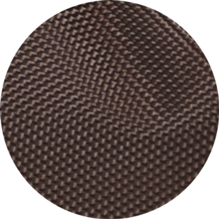
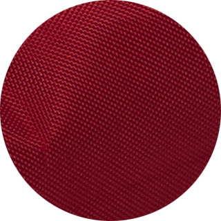

BuddyBeds come in three colors: Bailey Brown, Shadow Red, and Hunter Grey.


What are the dimensions of the BuddyBed?
Our beds come in the three following sizes: Small: 24" x 18" x 5" (inches). Medium: 36" x 24" x 5" (inches) Large: 44" x 24" x 5" (inches)
How much does the BuddyBed cost?
BuddyBeds are available in three sizes, for both our regular and deluxe versions. Prices are broken down below:
Regular Version:Small $99.00Medium $109.00Large $119.00
Deluxe:Small $109.00Medium $119.00Large $129.00
How long will it take to receive my bed?
You should receive your BuddyBed within 14 days of delivery. Shipping time depends on which service you choose at checkout.
Please allow 1 to 2 business days to process BuddyBed orders.
What is your return policy?
The Canine Line wants to make sure you are 100% happy with your BuddyBed. We will refund or replace any items that are damaged during shipping. We reserve the right to determine whether an item has been used or washed. Please note that the original shipping charges are non-refundable.
What is the BuddyBed made from?
The BuddyBed is made from a combination of synthetic and PVC polyester material. Not only does it guarantee your dog stays warm, the BuddyBed is weather-resistant. In fact, the styrofoam filling is held in its own removable water-resistant inner bag - protecting it from claws, tears and liquids!
Are those materials eco-friendly?
Yes! The filling is made from recycled styrofoam beads, and the 1680D PVC-backed polyester canvas has been deemed eco-friendly by REACH (Registration, Evaluation, Authorization and Restrictions of chemicals), the “EU regulation governing the placement on the market of chemical substances.”
Questions? Comments? Feel free to contact us via email at help@thecanineline.com or call us toll free at (1800) 679-9999.